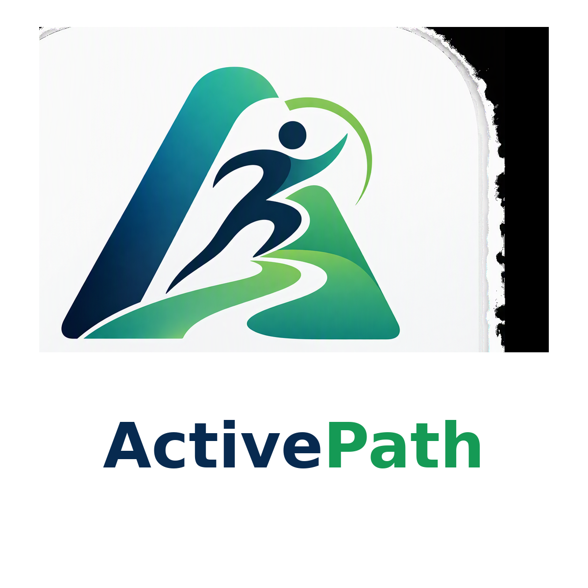

RF
ActivePath
Your path. Your pace. Your progress.
Rui PathPlano de Rui Ferreira • 4 semanas
Próximo treino
Treino B
Semana 1/4
Começar agora
Exercícios guiados, registo por série e pausas automáticas.
Sessões
0
Peso atual
81 kg
Plano semanal
Segunda: B • Quarta: C • Sexta: A
Começar com técnica e esforço controlados. A terceira série só se aplica aos dois primeiros exercícios nas semanas 3–4, se houver boa tolerância.
Evolução da carga
Preparar
00:20
Ronda 1 de 8
Alternância
Rondas ímpares: jumping jacks. Começar por step jacks, sem salto.
Rondas pares: mountain climbers lentos. Um pé de cada vez.
Objetivo inicial: esforço global 5–6/10. Se 10 segundos não chegarem, prolongar a pausa.
Sessões
0
Volume total
0
kg·repCarga máxima registada
Peso corporal
Resumo semanal
Comparar semanas específicas
■ Semana 1 ■ Semana 2
Sessões anteriores
Dados
As quatro fases são animações originais e offline. As correspondências identificadas como revistas foram comparadas com as instruções públicas do MuscleWiki; os vídeos do site não foram copiados. As variantes sem correspondência exata estão assinaladas na própria ficha. Plano de exercício, não avaliação médica. Confirmar doenças, medicação e limitações antes de começar. Não utilizar a multifuncional com funcionamento irregular. Parar perante dor no peito, tonturas, sensação de desmaio ou falta de ar desproporcionada.
Instalar no Android
Para instalar como PWA, alojar num endereço HTTPS e abrir no Chrome. Para testar sem servidor, usar o ficheiro HTML autónomo incluído no pacote e escolher “Adicionar ao ecrã principal” ou “Instalar aplicação”.